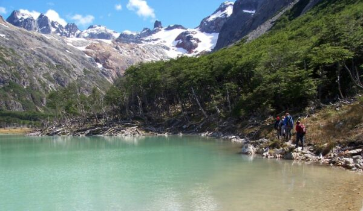

EXCURSIONES USHUAIA
| Nombre excursion | Duracion | Destino | Precio |
|---|---|---|---|
| Trekking Laguna Esmeralda | 5 horas | Ushuaia | $8000 |
| Navegacion Canal de Beagle | 7 horas | Ushuaia | $5200 |
| Navegacion Estancia Harberton | 12 horas | Ushuaia | $15000 |
Experiencia Trekking Laguna Esmeralda

Esta caminata es una de las más accesibles dentro de las opciones de Trekkings en la ciudad más austral del mundo. Nos pasan a buscar por nuestro hospedaje en dirección norte, a unos 20 minutos de la ciudad. Una vez llegados el guía nos explicara que debemos atravesar el Valle por un sendero muy claro y señalizado dependiendo de la estación del año en que nos encontremos, atravesaremos varios turbales y terreno rocoso. Después de un poco más de bosque, seguimos nuestra caminata bordeando el río Esmeralda hasta llegar a la indescriptible Laguna Esmeralda, un pequeño lago de origen glaciar, que debe su nombre al color que le dan los sedimentos que provienen del Glaciar Ojo del Albino. Este color solamente se puede apreciar en verano ya que en invierno estará congelada y cubierta de nieve. Mientras disfrutamos la vista de la Laguna tendremos ocasión para consumir el box lunch. Al regreso el camino nos será familiar y podremos tener la última oportunidad de apreciar las bellezas que nos rodean. Una vez finalizada la caminata nos volvemos a encontrar con el vehículo que nos estará esperando para llevarnos de regreso a la ciudad de Ushuaia.
- Frecuencia: Todo el año
- Duracion: medio dia
- Salida: desde el hotel
- Recomendaciones de vestimenta
- Campera impermeable + campera polar
- Zapatos o zapatillas de trekking impermeables
- Sombrero o gorro
- Anteojos de sol
- En invierno guantes y abrigo extra